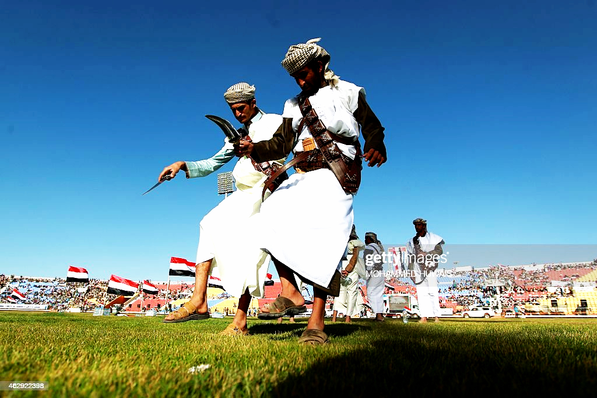
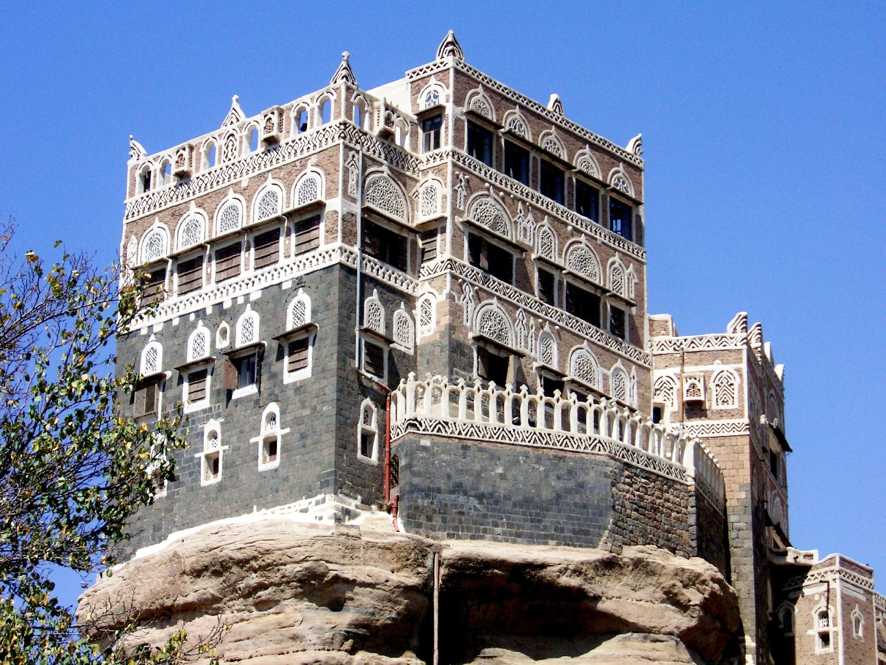
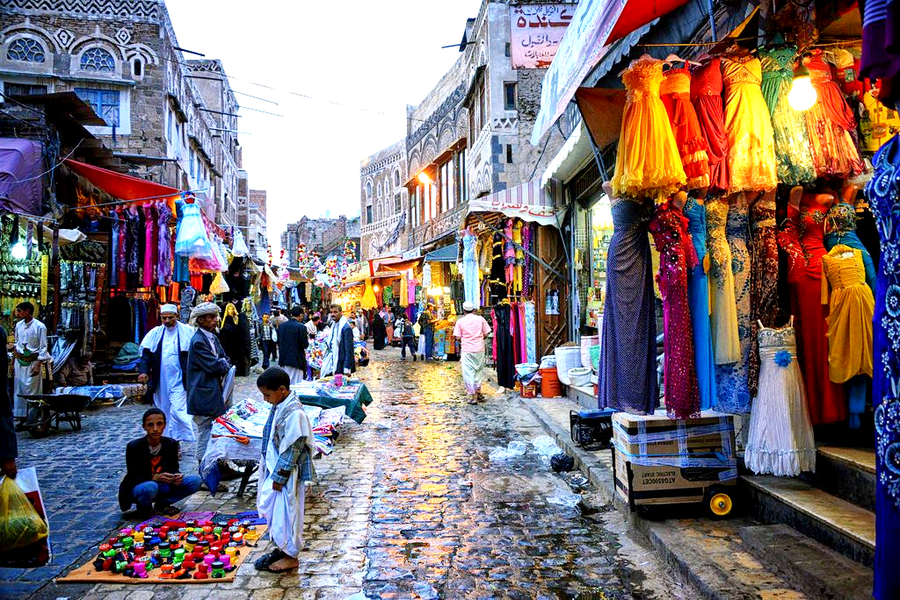

Visit Sana'a
Enjoy the culture and ancient landmarks
Top three things you can explore in Sana'a

Learn about the Yemeni Music and Folkloric Dances
Yemen is very rich in its cultural heritage of the folklore of the folk dances and songs. The popular song has become an artistic reference for many lyrical schools not only in Yemen but also in the entire Gulf region and Arabian Peninsula.

Explore all the sights and landmarks
Enjoy your time vising Dar Alhajar and the other histoic places in Sana'a.

Visit the popular old markets
Nearly every Yemeni city, town, and village has some sort of shopping, usually in the form of a souk (market). Souks are attractions in themselves, and ideal places for visitors to learn the culture, language, and customs of Yemen all in one go.